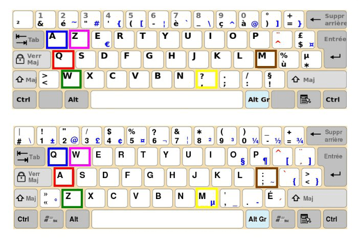

Durant cette session, on va plus se concentrer sur la création de jeux vidéos dans le language JavaScript. Pour ce faire, on se servira de la librarie Phaser.
Commencer !Durant cette session, on va plus se concentrer sur la création de jeux vidéos dans le language JavaScript. Pour ce faire, on se servira de la librarie Phaser.
Commencer !Avant d'entamer ce défi, assure toi d'avoir déjà fait ceux-ci:
Ensuite, assure-toi de te munir d'une grande motivation et soif d'apprendre!
Aussi, assure-toi que tu sois bien connecté à ton compte Repl.It, et que tu aies ton projet de la fois passée.
Tu sais sûrement ce qu'est la gravité. C'est la force physique qui te retient sur terre dans tes activités de tous les jours. C'est une force qui agit en permanence et qui te tire vers le bas toujours et toujours.
Dans un jeu vidéo, pour qu'il soit un minimum réaliste, il faut donc aussi une gravité. Cette gravité devrait toujours agir, sauf quand on veut monter.
Il nous faut donc adapter notre code de plusieurs façons. D'abord, on doit changer ce que font les touches S et W/Z (W sur les claviers QWERTY et Z sur les claviers AZERTY)
La touche S (Touche bas) ne devrait rien faire pour l'instant.
La touche W/Z (Touche haut) devrait ajouter une plus grande vitesse (~500)
Maintenant, lorsque tu joues, tu sais juste monter rapidement vers le haut mais plus vers le bas... On va alors ajouter la gravité!
this.player.body.setGravityY(800);
Voici la commande pour activer la gravité. Dans quelle fonction faut-il la placer? Dans preload, create ou update? Réflechis-bien!
Si tout se passe bien, tu sais voler maintenant en sautant!!
C'est bien gentil de pouvoir voler, mais on aimerait bien pouvoir retomber sur quelque chose. On va donc ajouter des plateformes!
Tout d'abord, tu vas devoir dessiner ta plateforme. Retourne sur pixilart.com et dessine une jolie plateforme 40x40.
Après avoir dessiné et importé ton image, tu peux load cette image dans le système. Ceci est fait comme tu as load (téléchargé) le joueur: en lui donnant un nom et en utilisant le nom de l'image.
Après avoir load l'image, tu sais faire apparaître une plateforme sur l'écran comme tu as fait apparaître le joueur. Souviens-toi, tu as utilisé la commande
this.player = this.physics.add.sprite(400, 360, "player");
pour faire apparaître le joueur. Adapte la commande pour faire apparaître une plateforme!
Essaie d'adapter les coordonnées pour faire apparaître la plateforme sous ton Sprite. Est-ce que le personnage tombe à travers la plateforme?
On doit encore indiquer qu'on veut créer une collision entre les deux objets!
this.physics.add.collider(this.player, this.platform);
Ceci va ajouter une "collision" entre la palteforme et le joueur. Lance ton code, en faisant attention à avoir ton joueur au-dessus de la plateforme, et observe!
Gros Problème! Le personnage emporte la plateforme!! Ce n'est certainement pas le but!
En fait, il nous faut rendre la plateforme STATIQUE. Dans ce cas là, le joueur ne saura plus l'emporter avec lui.
Une façon de le rendre statique est simplement de dire qu'il ne peut pas bouger. En effet, ils sont synonymes.
this.platform.setImmovable(true);
Place ce code après avoir créé ta plateforme, mais avant d'ajouter la collision. Voilà, tu as crée la première partie de la plateforme!
Mais il n'y a qu'une plateforme pour l'instant... Rajoutons-en encore une non?
Crée une nouvelle plateforme en utilisant
this.platform2 = this.physics.add.sprite(XXX, YYY, "platform");
Rend cette plateforme inmouvable également!
this.platform2.setImmovable(true);
Finalement, ajoute une collision entre le joueur et les plateformes!
this.physics.add.collider(this.player, this.platform2);
Voilà! Tu as ajouté une nouvelle plateform, platform2.
CHALLENGE: Ajoute encore 2 ou 3 plateformes et assure toi que tu puisse sauter d'une plateforme à l'autre.
Tu t'es surement rendu compte que c'est pénible d'ajouter les plateformes un à un! Et tu as entièrement raison! Pour résoudre cela, on va utiliser des groupes.
Commençons par créer un groupe.
this.platforms = this.physics.add.group();
Remarque que j'utilise ici plateforms, donc ce n'est pas le même nom de variable qu'avant.
Pour ajouter une plateforme, il suffit d'ajouter une plateforme au groupe maintenant.
this.platforms.create(XXX, YYY, "platform");
Maintenant essaie de rendre tout le groupe imouvable et d'ajouter une collision avec le joueur!
Ca marche pas! Surprise! En fait, on ne sait pas rendre un groupe imouvable. On sait par contre le rendre STATIQUE
Lorsque tu crées ton groupe, change la ligne en
this.platforms = this.physics.add.staticGroup();
Maintenant, ajoute une collision avec le joueur et observe. Normalement, tu peux te poser sur les nouvelles plateformes.
Pour créer d'autres plateformes, il te suffit alors de répeter ce code:
this.platforms.create(XXX, YYY, "platform");
Tu peux le répeter autant de fois que tu le souhaites.
CHALLENGE: Enlève les plateformes créées plus tôt en utilisant l'ancienne manière. Ajoute 10 plateformes sur ton écran et assure-toi que tu puisse sauter d'une plateforme à l'autre.
Le jeu est trop facile pour l'instant! Tu sais voler!!
Pour remedier à ça, tu peux ajouter une condition en plus pour pouvoir sauter, de cette façon:
if(this.key_W.isDown && /* Touche la plateforme */) {
// Sauter
}
Pour vérifier si tu touches la plateforme, utilise
this.player.body.touching.down
Voilà, tu ne peux plus voler!
Challenge final: Fait commencer ton joueur à gauche du jeu. Ajoute des plateformes pour faire un jeu de parcours. Pour les plus déterminés, ajoutez un drapeau (Ou autre objet de victoire) à la fin du jeu! (Attention, la dernière partie est compliquée!)